Home Ribbon Tab¶
The Home ribbon tab in Microscopy Image Browser (MIB) provides tools for handling image datasets, including importing, exporting, saving, and rendering options. This page details each section, with demonstrations and references where available.
Overview¶
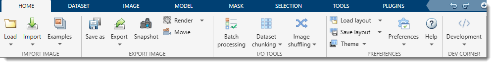
The image above shows the Home tab of the ribbon at the top of the MIB interface. This tab organizes essential file-related actions for working with multidimensional microscopy datasets.
Import Image Section¶
Load¶
-
Click the button to select the current working directory with images. After selection, the image files will be shown in the Directory Contents panel and the current directory in the Status bar will be updated to the selected folder.
-
Additionally, a dropdown menu under the button shows the list of recent directories from which images were loaded previously. Selecting a directory from that list updates the current working directory to the selected folder.
Number of recent directories
The number of directories to keep can be specified from the Preferences dialog -> User interface:
Import¶
- MATLAB: Import an image from the main MATLAB workspace into MIB
Optionally include adictionarywith dataset parameters that were generated by the Export image to command Brief demo - System Clipboard: Paste an image from the system clipboard
Uses the IMCLIPBOARD function by Jiro Doke, MathWorks, 2010 Brief demo -
Imaris: Import a dataset from Imaris
Requires Imaris and ImarisXT and uses IceImarisConnector by Aaron C. Ponti, ETH Zurich
Demo -
OMERO: connect to an OMERO server and load images.
Not implemented
Requires OMERO server files; see System Requirements for installation details.
Demo- Select a server (do not copy/paste the password):
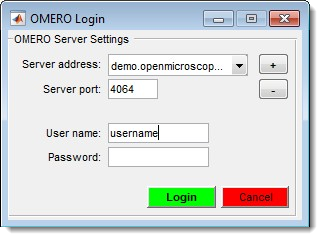
- Choose a dataset and range:
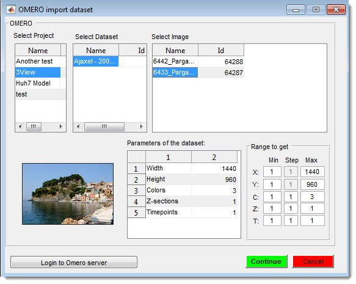
- Select a server (do not copy/paste the password):
-
URL / Zarr: Open a dataset from a URL address - an ordinary image, or an OME-Zarr container in a public cloud bucket browsed and opened without downloading it (see details)
The link must include the protocol (e.g.,http://) Brief demo

Example datasets¶
Quickly access demo datasets and full DeepMIB projects for image segmentation, grouped by data collection techniques.

DeepMIB projects → Synthetic 2D Large Spots
A complete DeepMIB project with a synthetic dataset for testing semantic segmentation
Includes a trained DeepLabV3-Resnet18 network for detecting large spots on a black background
Load the network via 2D_LargeSpots_2cl_DeepLabV3.mibCfg using:
Ribbon → Tools → Deep learning segmentation → Options tab → Config files → Load
| Directory Tree | Segmentation Example |
|---|---|
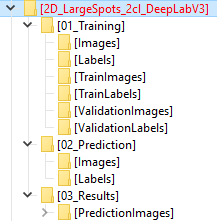 |
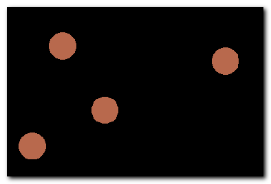 |


Reference: DOI: 10.5281/zenodo.10203188
DeepMIB projects → Synthetic 2D Small Spots
A complete DeepMIB project with a synthetic dataset for testing semantic segmentation
Includes a trained U-net network for detecting small random spots of two colors on a black background
Load the network via 2D_SmallSpots_3cl_Unet.mibCfg using:
Ribbon → Tools → Deep learning segmentation → Options tab → Config files → Load
| Directory Tree | Segmentation Example |
|---|---|
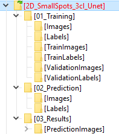 |
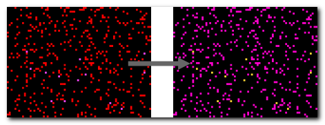 |


Reference: DOI: 10.5281/zenodo.10203764
DeepMIB projects → Synthetic 2.5D Large Spots
A complete DeepMIB project with a synthetic dataset for testing 2.5D depth-to-color semantic segmentation
Includes trained 2.5D DeepLabV3-Resnet18 and U-net networks for segmenting large 3D spots (ignoring 2D spots) using 5-slice subvolumes
Load the networks via:
- Spots_25D_DLv3RN18_Z2C_xy200z5 (DeepLabV3-based)
- Spots_25D_Unet_Z2C_xy200z5 (U-net-based)
Using Ribbon → Tools → Deep learning segmentation → Options tab → Config files → Load or drag-and-drop the config file into DeepMIB
| Directory Tree | Segmentation Example |
|---|---|
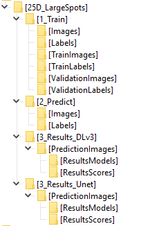 |
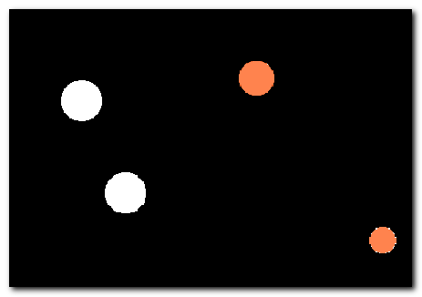 |


Reference: DOI: 10.5281/zenodo.10212417
DeepMIB projects → Synthetic 2D Patch-wise
A complete DeepMIB project with a synthetic dataset for testing patch-wise segmentation
Includes a trained Resnet18 network for detecting patches of large white spots on a black background
Load the network via 2D_LargeSpots_Patchwise_Resnet18.mibCfg using:
Ribbon → Tools → Deep learning segmentation → Options tab → Config files → Load
| Directory Tree | Segmentation Example |
|---|---|
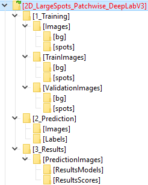 |
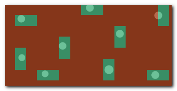 |


Reference: DOI: 10.5281/zenodo.10203861
DeepMIB projects → 2D EM Membranes
A complete DeepMIB project for segmenting membranes from serial-section TEM images
Includes trained U-net and DeepLabV3-Resnet18 networks
Updated project from DeepMIB paper (Figure 1a)
Load via 2D_EM_membranes_Unet.mibCfg or 2D_EM_membranes_DLabRN18.mibCfg using:
Ribbon → Tools → Deep learning segmentation → Options tab → Config files → Load
See readme.txt for details
| Directory Tree | Segmentation Example |
|---|---|
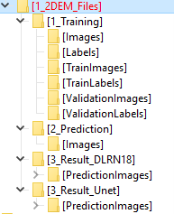 |
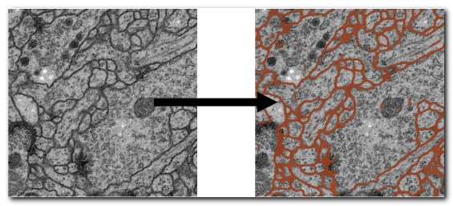 |


DeepMIB projects → 2D LM Nuclei
A complete DeepMIB project for segmenting nuclei, boundaries, and touching edges
Includes a trained U-net network
Updated project from DeepMIB paper (Figure 1b)
Load via valid_252px_32patches_50ep.mibCfg using:
Ribbon → Tools → Deep learning segmentation → Options tab → Config files → Load
See readme.txt for details
| Directory Tree | Segmentation Example |
|---|---|
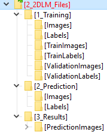 |
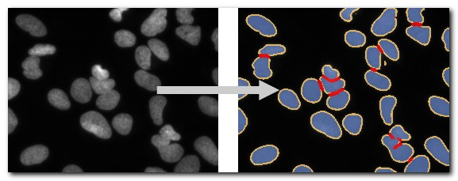 |


DeepMIB projects → 3D EM Mitochondria
A complete DeepMIB project for segmenting mitochondria
Includes a trained 3D U-net network
Updated project from DeepMIB paper (Figure 1c)
Load via NoValidation_valid_Aug_128px_256pat.mibCfg using:
Ribbon → Tools → Deep learning segmentation → Options tab → Config files → Load
See readme.txt for details
| Directory Tree | Segmentation Example |
|---|---|
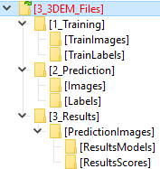 |
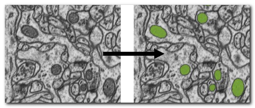 |


DeepMIB projects → 3D LM Inner Hair Cells
A complete DeepMIB project for segmenting inner hair cells, nuclei, and synapses
Includes a trained 3D anisotropic U-net network
Updated project from DeepMIB paper (Figure 1d)
Load via InnerEar3D_Hybrid_Same_136x64px_120ep.mibCfg using:
Ribbon → Tools → Deep learning segmentation → Options tab → Config files → Load
See readme.txt for details
| Directory Tree | Segmentation Example |
|---|---|
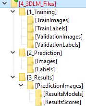 |
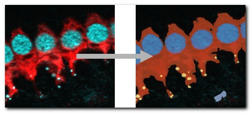 |


LM → 3D SIM ER
A 3D super-resolution structured illumination light microscopy dataset of endoplasmic reticulum 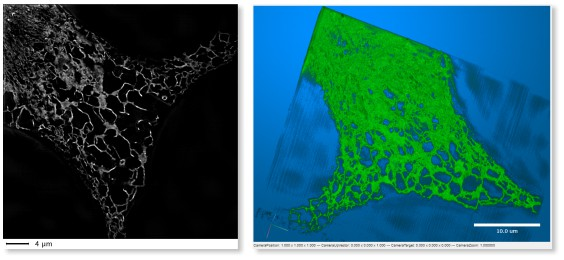

LM → 3D STED
A 3D super-resolution Stimulated Emission Depletion (STED) microscopy dataset 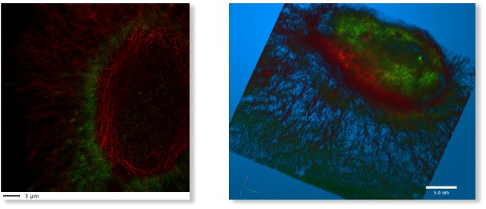

LM → WF ER Photobleaching
A wide-field time-lapse imaging dataset of endoplasmic reticulum with visible photobleaching effect 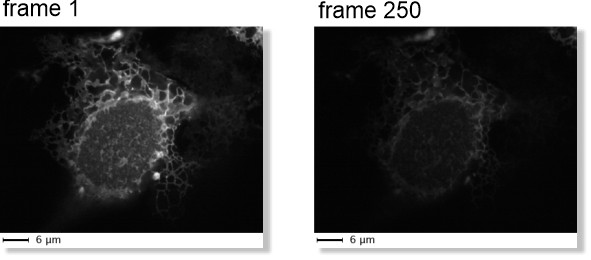

SBEM → Huh-7 and Model
A small fragment of serial block face scanning electron microscopy dataset featuring a Huh-7 cell and a model of nuclei, endoplasmic reticulum, mitochondria, and lipid droplets 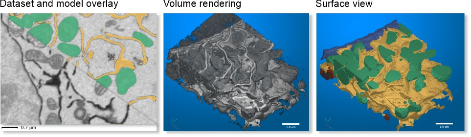

SBEM → Trypanosoma and Model
A fragment of serial block face scanning electron microscopy dataset featuring a Trypanosoma brucei cell and a model of nuclei, endoplasmic reticulum, mitochondria, vesicles, lipid droplets, and cytoplasm 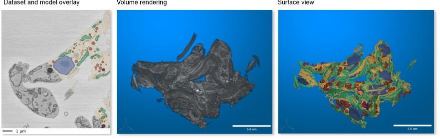

MRI → MATLAB Brain and Model
A test brain dataset from MATLAB, captured with magnetic resonance imaging (MRI), including a tumor model 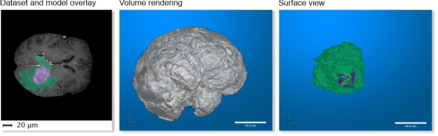
Available only in MIB for MATLAB

Export Image Section¶
Save Image As¶
Save the open dataset to disk in various formats:
Supported Image Formats
- AM, Amira Mesh: Binary format for Amira Mesh
- JPEG, Joint Photographic Experts Group: Lossy compressed RGB format
- HDF5, Hierarchical Data Format: Version 5 format
- MRC, MRC format for IMOD: Compatible with IMOD
- NRRD, Nearly Raw Raster Data: Compatible with 3D Slicer
- OME-TIFF 5D (*.ome.tiff): 5D stack using BioFormats library
- OME-Zarr v3 (*.zarr3): Chunked, pyramidal OME-Zarr v3 store — reopenable in MIB as a BigData dataset and by external OME-Zarr tools. Choosing this format opens an export-settings dialog (pyramid levels, chunk size, sharding, compression)
- PNG, Portable Network Graphics (*.png): Lossless format
- TIF format, LZW compressed: Multilayered or sequence of 2D files (max 2GB due to 32-bit offsets)
- TIF format, non-compressed: Same as above, uncompressed
Exporting a pyramid level (Virtual / BigData datasets)
When the open dataset is pyramidal (a Virtual or BigData OME-Zarr dataset), the Save Image As dialog adds a selector listing each resolution level with its dimensions (s0 = full resolution … sN = coarsest). Pick the level you want to write out.
The selected level is streamed to disk one slice at a time, so the full volume is never loaded into memory — useful for very large slides. The saved file carries the chosen level's voxel size (derived from the dataset bounding box). True per-slice streaming is available for TIFF, PNG, JPEG, HDF5 and OME-Zarr v3; other formats write the selected level as a whole.
BigData datasets — format compatibility & memory use
All image formats above can save a BigData (or pyramidal Virtual) dataset at the chosen pyramid level. They differ only in how much memory the write needs:
| Format | BigData | Memory-optimized (streamed slice-by-slice) |
|---|---|---|
| TIF (uncompressed / LZW) | ✅ | ✅ |
| PNG | ✅ | ✅ |
| JPEG | ✅ | ✅ |
HDF5 (*.h5 / *.xml) |
✅ | ✅ |
OME-Zarr v3 (*.zarr3) |
✅ | ✅ |
| Amira Mesh, Big Data Viewer HDF5, OME-TIFF, MRC, NRRD | ✅ | ❌ selected level is gathered whole before writing |
Use the dropdown to bound memory — a coarse level is small. The memory-optimized formats never hold even one full level in memory, so prefer them when exporting the full-resolution level (s0) of a very large slide.
Export Image To¶

Export the current dataset to external applications:
- MATLAB: Export includes a
dictionarywith dataset parameters for re-import into MIB Demo - Imaris: Export to Imaris (requires Imaris installation)
-
Zarr3: Export the dataset as a chunked, pyramidal OME-Zarr v3 store (
.zarr3) — readable by MIB as a BigData dataset and by external OME-Zarr–compatible toolsExport to Zarr3 — dialog settings
A settings dialog appears after choosing the output path. Defaults are automatically adapted to the open dataset type (WSI vs. 3-D volumetric); see the Smart defaults table at the bottom.
Setting Description Pyramid levels (0 = auto) 0= auto: starts at full resolution, adds a level while min(Y, X) / 2 ≥ 256 px, up to 8 levels. Enter 1–12 to force a fixed count.Chunk size [Y, X, Z] Zarr chunk dimensions in pixels. Smaller chunks give finer random-access granularity; larger chunks improve sequential read throughput. Shard X-factors [Y, X, Z] Integer multipliers specifying how many chunks to bundle per axis into one shard file (zarr v3 sharding codec). For example, 4, 4, 1packs 4 × 4 × 1 = 16 chunks per file, significantly reducing file count for large pyramids. Set any axis to0to disable sharding entirely.Compression zstd(fast, excellent ratio — default),gzip(broader tool compatibility),none(fastest write, largest files).Downsampling method Kernel for building coarser pyramid levels: bilinear(fast, smooth — default),nearest(fast, exact integer values),bicubic(slow, sharper edges),median(slow, noise-robust — good for images with outlier pixels, better edge preservation than bilinear),mode(slow, precise — dominant value per block; for categorical label data exported as images).Downsampling strategy How the Z axis is treated when building coarser levels — see below.
Downsampling strategy
-
XY only — every pyramid level halves X and Y; Z stays constant. Voxels become progressively more anisotropic at coarser levels. Default for WSI and near-isotropic 3-D data.
-
Anisotropy-preserving — halves XY until the effective XY voxel size would exceed the Z voxel size; from that point onward, both XY and Z are halved together, keeping the voxel aspect ratio close to 1 : 1 at every pyramid level. Recommended for 3-D datasets where the Z step is coarser than the XY pixel size (e.g. confocal, SBEM stacks with vxZ >> vxXY).
Smart defaults (computed from the open dataset)
Dataset type Chunk [Y, X, Z] Shard X-factors Strategy WSI (Z ≤ 2 slices or max(Y, X) ≥ 8 000 px) 512 × 512 × 1 4 × 4 × 1 XY only 3-D, near-isotropic (vxZ < 2 × vxXY) 128 × 128 × 64 4 × 4 × 1 XY only 3-D, anisotropic (vxZ ≥ 2 × vxXY) 256 × 256 × 16 4 × 4 × 1 Anisotropy-preserving -
Make Snapshot¶

Capture a snapshot of the current slice, including all visible objects.
See Make Snapshot for details.
Render Volume¶
Visualize volumes in 3D using three methods:
MIB Rendering (recommended)¶
Hardware-accelerated volume rendering in MIB (since version 2.5, MATLAB R2018b).
Supports downsampling, snapshots, and animations. Updated in MIB 2.84+ (MATLAB R2022b) to render 1-3 color channels with models (MATLAB-only as of 2.84).
See 3D Viewer for details, Demo.
Volume Rendering Engines of MIB
- MIB3 has only the new rendering engine available
| MIB 2.84+, R2022b or newer (Volumes 1-3 colors + models) |
MIB 2.5, R2018b or newer (1-channel volumes or single material models) |
|---|---|
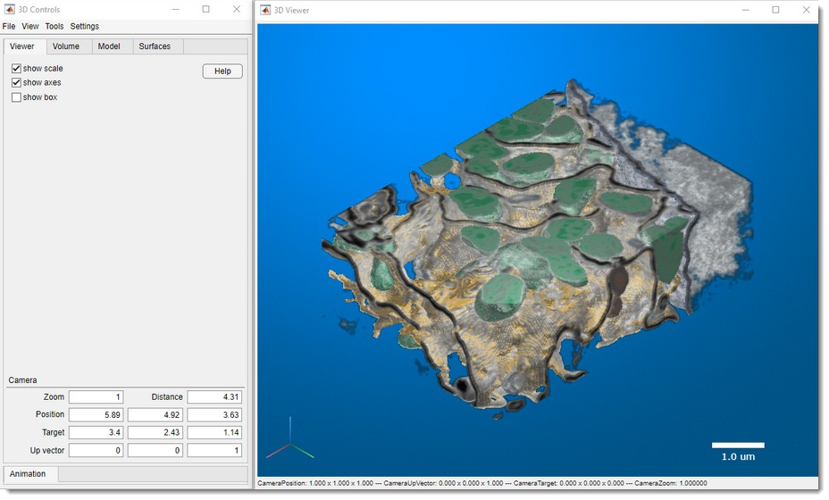 |
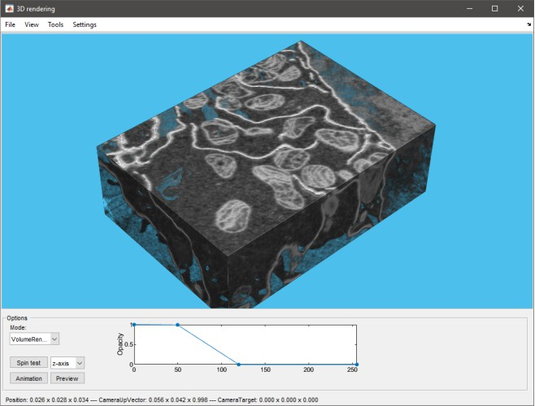 |
| Limitations: - Available only for MIB for MATLAB (as of 2.84) - One volume at a time |
Limitations: - One volume at a time (image or model material) - Grayscale only (single channel) - No scale bar |


MATLAB Volume Viewer¶
Export to MATLAB's Volume Viewer app 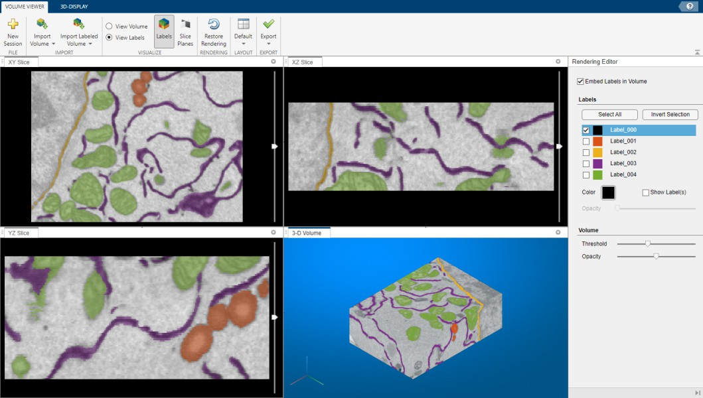
 not available in compiled MIB
not available in compiled MIB
Demo

3D viewer in Fiji¶
Render via Fiji (requires installation; see System Requirements).
Demo

Additional parameters: 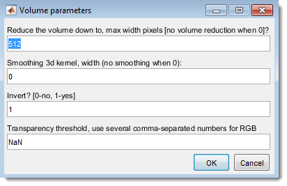

- : Resize dataset (0 for no resizing)
- : Apply Gaussian blur (0 for no smoothing)
- : Invert for electron microscopy
- : Set transparency (comma-separated for each channel), adjustable in Fiji's 3D Viewer (Edit → Attributes → Adjust threshold)
Make Movie¶

Save the dataset as a movie file, capturing all visible objects in the image view window.
See Make Movie for details.
I/O Tools Section¶
Batch Processing¶

Design and apply image processing workflows to multiple images automatically.
See Batch Processing for details.
Dataset Chunking¶

Split a large dataset into smaller subvolumes and reassemble them later, or fuse previously cropped datasets. Use the Dataset chunking dropdown to access:
- Chunk dataset: Split the image into smaller chunks for block-based or parallel processing
- Stitch dataset: Reassemble previously chunked subvolumes back into the full image
- Fuse into dataset: Insert previously cropped subvolumes back into the currently open dataset
See Dataset Chunking for details.
Image Shuffling¶

Shuffle files for blind modelling and revert models to original filenames for analysis. Use the Image shuffling dropdown to access:
- Shuffle images: Randomly reorder and rename images to reduce processing bias
- Restore order: Revert images to their original order and filenames
See Image Shuffling for details.
Preferences Section¶
Layout Management¶
Save and restore the arrangement of MIB panels using the Load layout and Save layout buttons.
Load layout options:
- Load local default layout: Restore the layout saved as your personal default (
mibDefaultLayout.jsonlocated in the MIB preferences folder) - Load custom layout: Load a layout from a custom file
- Load MIB default layout: Restore the factory default MIB layout
Save layout options:
- Save the current layout as default: Save the current panel arrangement as your personal default
Stored asmibDefaultLayout.jsonin the MIB preferences folder (shown at startup asMIB parameters file: ...) - Save the current layout in a custom file: Save to a custom file for sharing or backup
- Save the current layout as MIB default: Override the factory default layout (affects all users of this MIB installation)
Theme¶
Switch MIB between the light and dark color themes. Follow the system theme uses the theme set in MATLAB. The choice is remembered for the next MIB session.
Note
When MIB runs from MATLAB, the MATLAB desktop switches together with MIB and returns to its own theme when MIB is closed.
Preferences¶

Edit MIB preferences, including colors for Selection, Model, and Mask layers, mouse wheel behavior, key settings, and Undo options.
See Preferences for details.
- Make override default settings file: Save your changes to the default settings as the starting settings of new users of this computer or of this MIB installation, see Overriding default settings
MIB saves configuration in a file generated upon closing:
Configuration File Location
- Windows:
C:\Users\Username\MATLAB\mib3.mator TEMP directory (C:\Users\Username\AppData\Local\Temp\)
Access TEMP via Windows → Start → %TEMP% - Linux:
/home/username/Matlabor local TEMP directory - MacOS:
/Users/username/Matlabor local TEMP directory
Location of the configuration file is shown upon MIB startup as:
MIB parameters file: C:\Users\username\Matlab\mib3.mat
Help¶
Access help and application information via the Help dropdown:
- Open MIB help: Open the MIB documentation website
- Tip of the day: Display a random usage tip
- Support on image.sc: Open the image.sc community forum for MIB questions and support
- Personal support session: Request a one-on-one remote support session with the MIB team
- Check for update: Check for a newer version of MIB and download it if available
- Your personal stats: View your cumulative MIB usage statistics
- Licenses: View licenses for MIB and all included third-party tools
- About MIB: Show MIB version information and credits
Dev Corner Section¶
Developer mode¶
When enabled, widget tooltips display the internal handle name of each ribbon control - useful for identifying widgets when customizing or scripting MIB.
API class reference¶
Opens the MIB API class reference documentation.
Development¶
Calls controllers.MibRibbon.homeDevTest_Callback() — a reserved entry point for internal debugging. Can also be invoked directly from the MATLAB command line:
Back to MIB | User interface | Ribbon